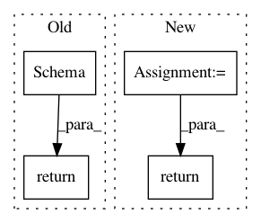

bc0c3b6035aea0b25b827e46d4a67a1e3bc9078e,tensorflow_transform/saved/input_fn_maker_test.py,,_make_raw_schema,#Any#Any#,35
Before Change
def _make_raw_schema(shape, should_add_unused_feature=False):
schema = sch.Schema()
schema.column_schemas["raw_a"] = (sch.ColumnSchema(
tf.int64, shape, sch.FixedColumnRepresentation(default_value=0)))
schema.column_schemas["raw_b"] = (sch.ColumnSchema(
tf.int64, shape, sch.FixedColumnRepresentation(default_value=1)))
schema.column_schemas["raw_label"] = (sch.ColumnSchema(
tf.int64, shape, sch.FixedColumnRepresentation(default_value=-1)))
if should_add_unused_feature:
schema.column_schemas["raw_unused"] = (sch.ColumnSchema(
tf.int64, shape, sch.FixedColumnRepresentation(default_value=1)))
return schema
def _make_transformed_schema(shape):
schema = sch.Schema()
After Change
def _make_raw_schema(
shape=None,
should_add_unused_feature=False):
feature_spec = {
"raw_a": tf.FixedLenFeature(shape, tf.int64, 0),
"raw_b": tf.FixedLenFeature(shape, tf.int64, 1),
"raw_label": tf.FixedLenFeature(shape, tf.int64, -1),
}
if should_add_unused_feature:
feature_spec["raw_unused"] = tf.FixedLenFeature(shape, tf.int64, 1)
return _MockSchema(feature_spec=feature_spec)
def _make_transformed_schema(shape):
feature_spec = {
In pattern: SUPERPATTERN
Frequency: 3
Non-data size: 4
Instances
Project Name: tensorflow/transform
Commit Name: bc0c3b6035aea0b25b827e46d4a67a1e3bc9078e
Time: 2018-10-01
Author: tf-transform-dev@google.com
File Name: tensorflow_transform/saved/input_fn_maker_test.py
Class Name:
Method Name: _make_raw_schema
Project Name: tensorflow/transform
Commit Name: bc0c3b6035aea0b25b827e46d4a67a1e3bc9078e
Time: 2018-10-01
Author: tf-transform-dev@google.com
File Name: tensorflow_transform/saved/input_fn_maker_test.py
Class Name:
Method Name: _make_transformed_schema
Project Name: tensorflow/transform
Commit Name: 687e31d276db17b4ac7bea08b01c1e5401168ca9
Time: 2019-01-23
Author: tf-transform-dev@google.com
File Name: tensorflow_transform/schema_inference.py
Class Name:
Method Name: infer_feature_schema